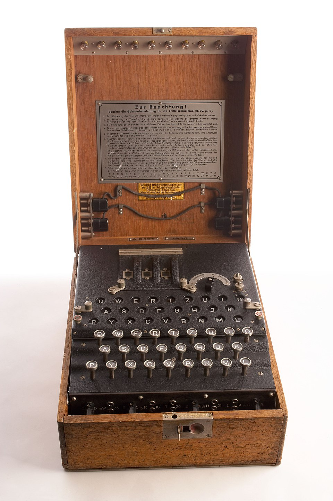
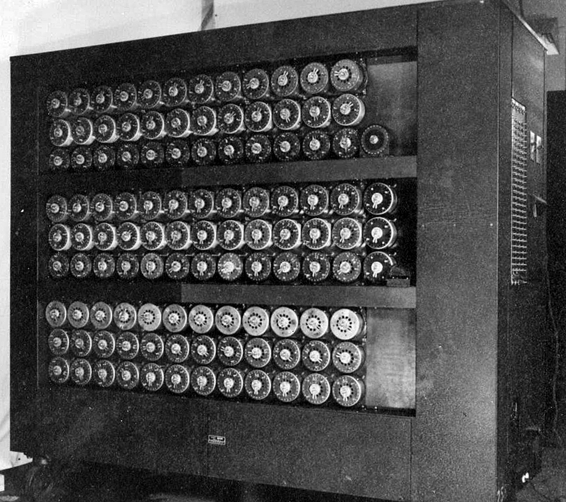

What is the Enigma Machine
The enigma machine was a way for the Axis Powers to send encrypited messages without the Allid Powers knowing what wasa sent. It was considered to be unbreakable which is what made it extremely valuable to the Allied Powers for communication.
How the Enigma Machine Works?
the enigma machine was a machanical device that had a keyboard but everytime a key was pressed their would be multiple wheels of letters on the inside that would spin to output a seemily random letter. This way any message could be encrypited with ease and sent.
How was the Enigma Code Cracked?
A mathmatician by the name Alan Turing was tasked with cracking the enigma machine. He stated in the essay "On Computable Numbers" that anything performed by a human who works with numbers can be done by machine. When cracking the enigma machine he realized that the process could be mechanized which led to the invention of the Bombe.
Why was it Important?
Being able to intercept the Axis Power's gave the Allied Powers access to every comunacation sent. This meant that they would know what the Axis Powers were planning without the Axis Powers knowing that they knew. The work Alan Turing did to crack the enigma machine help lead to the the start of computer science.
Enigma Machine

Source: https://www.flickr.com/photos/ciagov/5416145081/sizes/o/in/photostream/
The Bombe

Source: Set of wartime photos of GC&CS at Bletchley Park, Public domain, via Wikimedia Commons https://commons.wikimedia.org/wiki/File:Wartime_picture_of_a_Bletchley_Park_Bombe.jpg?uselang=en#Licensing